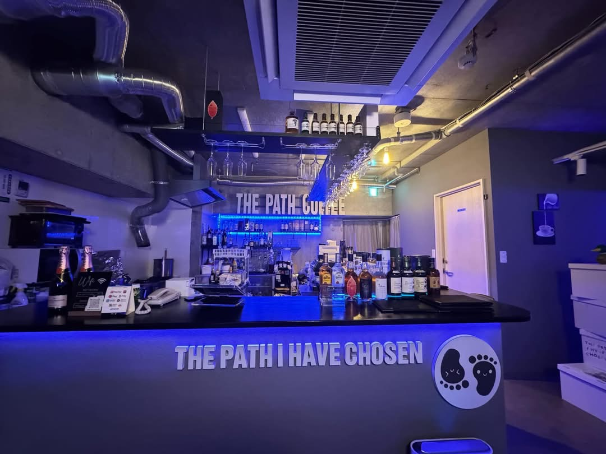
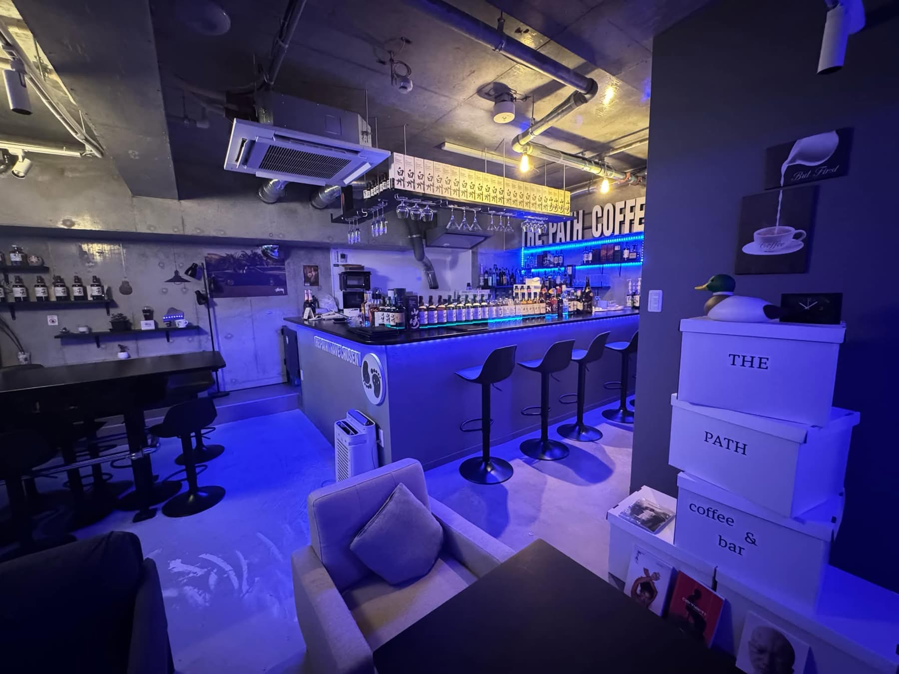
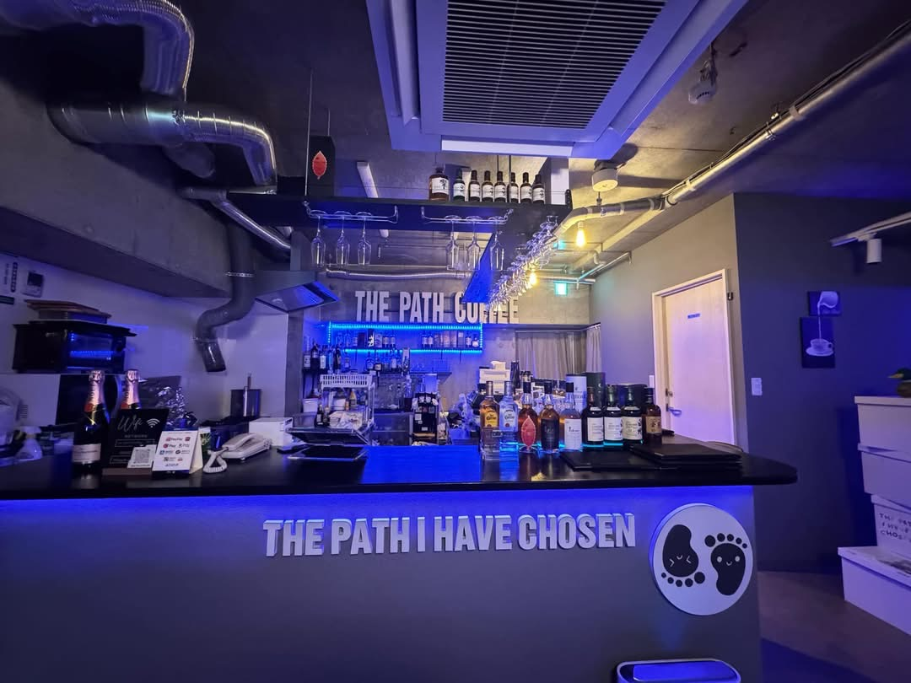
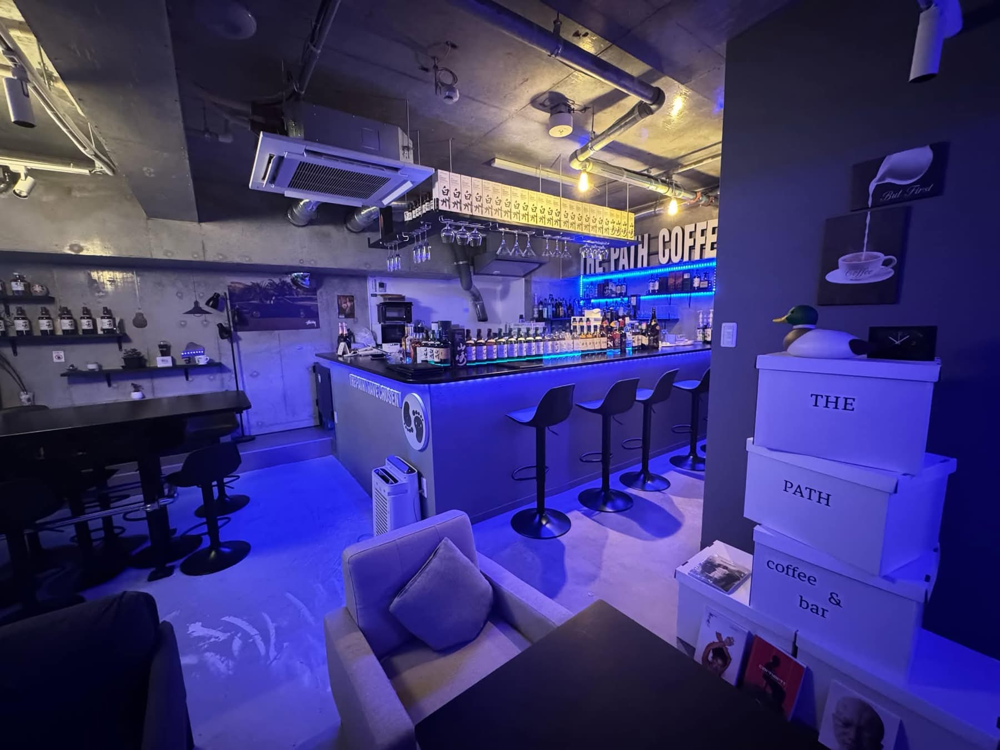
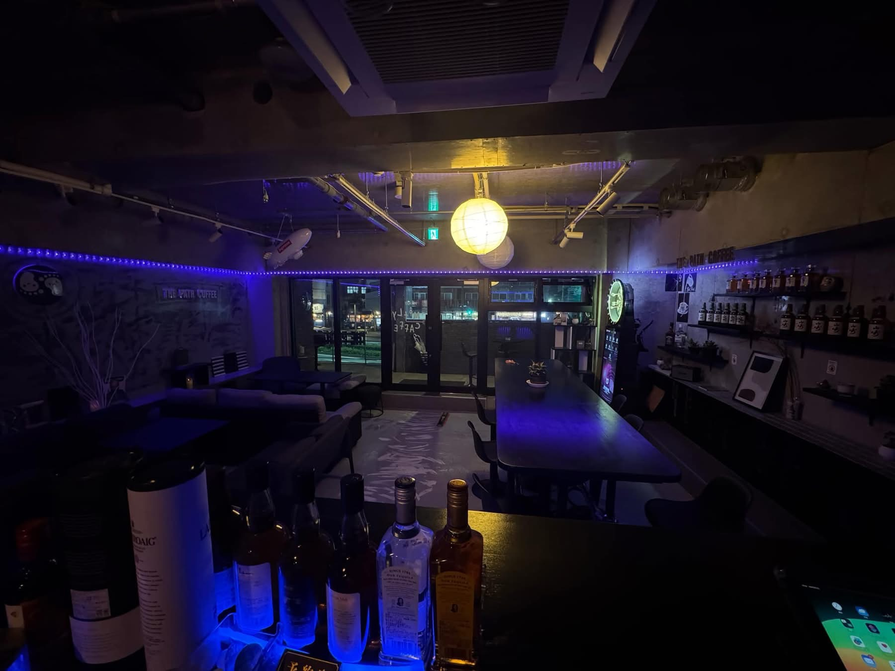
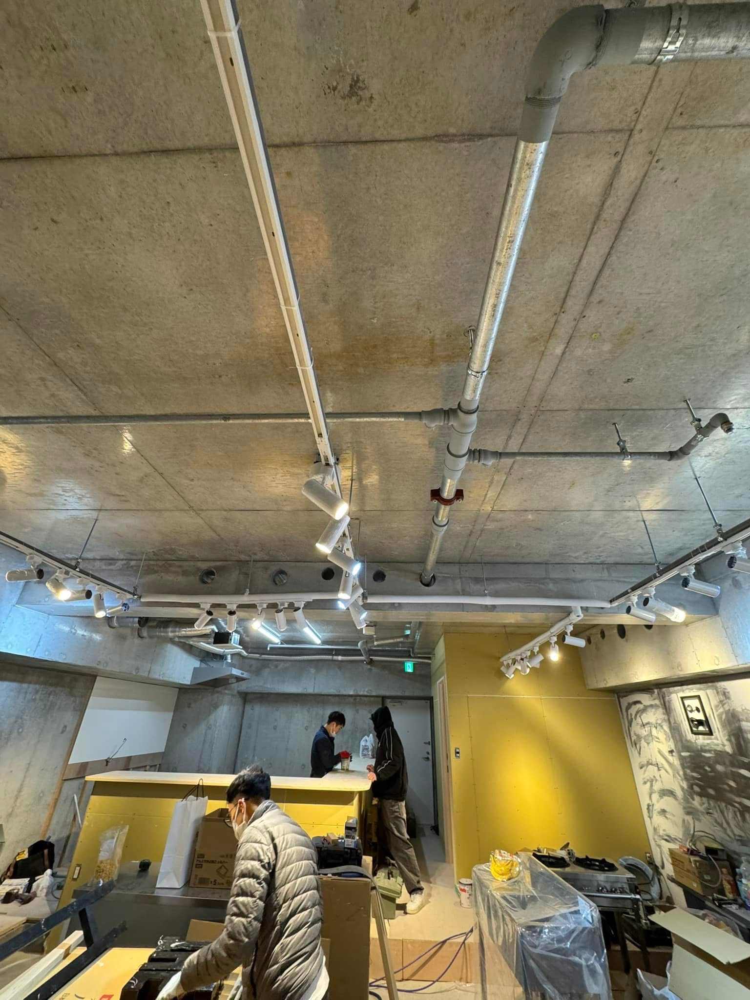
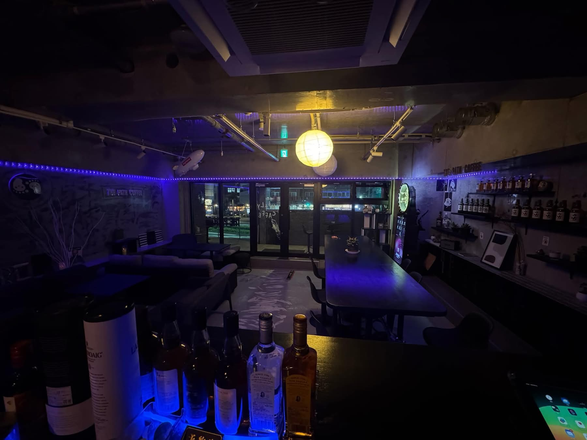
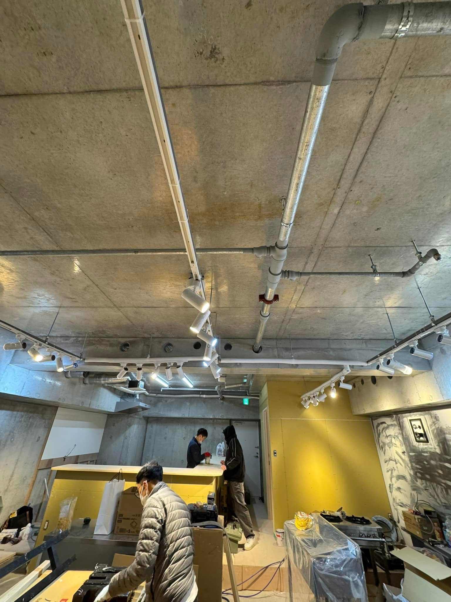

🌙 THE PATH COFFEE & BAR – FUKUOKA 🇯🇵2025/05/15
 



 



🌙 THE PATH COFFEE & BAR – FUKUOKA 🇯🇵
✨ Một dự án đầy cảm hứng dành cho những tâm hồn thích chill về đêm ✨
Chúng tôi tự hào khi được đồng hành cùng chủ đầu tư trong việc thiết kế và thi công
công trình The Path Coffee & Bar – quán bar mang phong cách hiện đại, không gian ánh
sáng chill, tọa lạc ngay giữa lòng Fukuoka.
Từ bản vẽ đầu tiên đến khi hoàn thiện, mọi chi tiết đều được chăm chút để mang đến
một không gian không chỉ đẹp mắt, mà còn chạm đến cảm xúc.
🎉 Chúng tôi xin gửi lời cảm ơn chân thành đến quý khách hàng vì đã tin tưởng lựa
chọn dịch vụ.
🏗 NNT株式会社:
Xây dựng bằng trách nhiệm – Hoàn thiện bằng chất lượng 🇯🇵
-新築( xây dựng nhà mới)
-注文住宅( xây dựng nhà đặt theo yêu cầu)
-リフォーム(sửa chữa cải tạo)
-店舖( nhà hàng, cửa hàng)
-アパート(căn hộ, nhà trọ)
-設計・施工( thiết kế bản vẽ xây dựng)